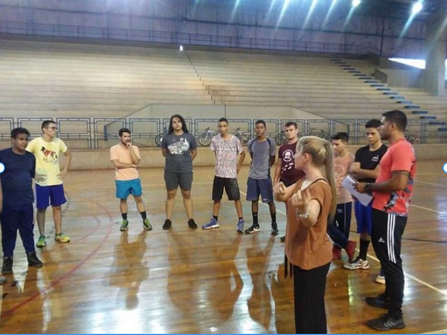

As atividades de estágio de Psicologia do Esporte (PE) ofertadas pelo curso de graduação em Psicologia da Universidade do Estado de Minas Gerais, unidade Ituiutaba acontece desde 2016, como atividade obrigatória. Esse estágio consiste em quatro horas semanais de supervisão comigo, que sou a Professora Supervisora do Estagio em Psicologia do Esporte, e de oito horas semanais de atividades práticas de campo, sendo essas de observação, intervenção, dentre outros. As atividades seguem um roteiro, respeitando o objetivo do estágio, de acordo com o Projeto Político Pedagógico do Curso de Psicologia.
São desenvolvidos trabalhos de observação e posteriormente intervenções que contemplaram as seguintes temáticas: exercício físico e saúde; exercício físico e esporte na infância e adolescência; exercício físico e ou esporte e bem-estar; treinamento com professores de educação física; preparadores físicos e técnicos; trocas de experiências e vivências por meio do exercício físico; exercício físico e controle da ansiedade; esporte e alto rendimento.
Os princípios éticos para psicólogos do esporte e do exercício: competência, integridade, responsabilidade pessoal e científica, respeito pelos direitos e pela dignidade das pessoas, preocupação com o bem-estar e responsabilidade social, também são abordados.
Profa. Dra. Telma Sara Queiroz Costa
Doutora em Psicologia no Programa de Pós graduação da Faculdade de Filosofia, Ciências e Letras de Ribeirão Preto -USP-Ribeirão Preto.
Mestrado em Educação pela Universidade Federal do Triângulo Mineiro (2015).
Membro do Grupo de Estudos GFEPAC – Grupo de Pesquisa Fenomenologia e Práticas Corporais, na Escola de Educação Física e Esporte de Ribeirão Preto, USP.